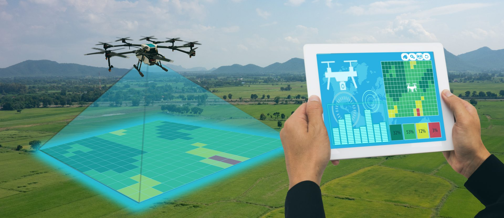
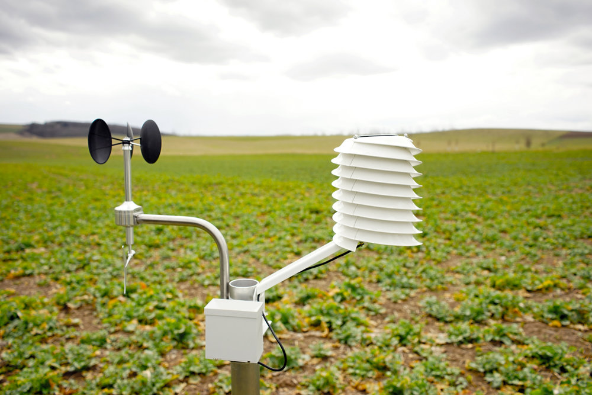

“What is not measured, is not managed.” – Robert Kaplan
By 2050, the global population will exceed 9 billion people (FAO). Urbanization will continue accelerating. Rising income levels will shift dietary demands toward greater variety and higher nutritional value. To meet this growing and more demanding demand, food production must increase by 70% (FAO).
Science and technology have already significantly increased food production. Agricultural productivity grew 2.5–3x over the past 50 years. But new challenges arise: climate change, natural resource limits, and environmental degradation.
Innovation must now guide how we grow food — sustainably, with precision, and for all. It’s not just about increasing productivity; it’s about doing so responsibly, for the generations to come.
Services
Drones and UAVs
In rural zones, drones and UAVs (unmanned aerial vehicles) offer precision farming tools. They help detect crop failures, water stress, and where to apply fertilizers or treatments. This reduces chemical use, saves water, and enhances results.
Advanced remote sensing using hyperspectral sensors and data analysis software enables highly detailed agricultural insights.

Internet of Things (IoT)
The Internet of Things connects smart devices to gather, share, and analyze field data — enabling better, faster, and more informed decisions. It enhances productivity and reduces costs.
Applications include livestock monitoring, water management, pest control, and disease prevention, all accessible remotely from any device.

About
PyAgri
Our mission is simple: to build a better world. Now more than ever, we need solutions that minimize environmental impact without compromising production levels.
Urban and rural agriculture, whether family or industrial, must coexist with nature — producing more with less, saving water, and avoiding waste.
Our goal is to enable data-driven agriculture. We believe that data, combined with farmer experience, can drive productivity and reduce costs. But collecting data in the field is hard — there's often no power or internet. So we’re building solutions using low-cost sensors, drones, vision systems, and machine learning algorithms.
Investors
PyAgri is seeking visionary investors to scale our agri-tech platform globally. Our mission is to make agriculture more accessible, efficient, and sustainable through low-cost technology.
From urban farms to national food programs, PyAgri sits at the intersection of sustainability, open innovation, and global food security.
If you're an investor aligned with environmental impact, food systems, or frontier tech — let’s talk.